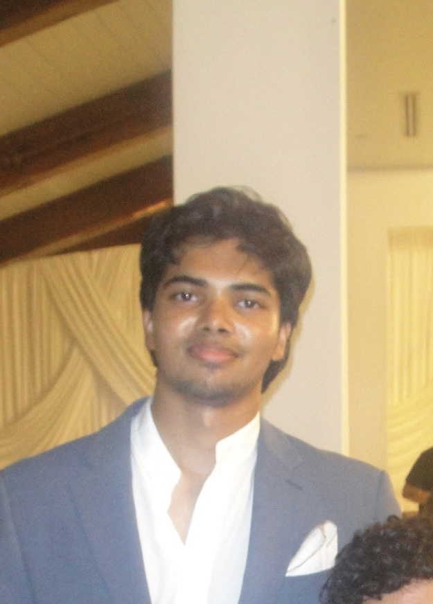

99.8th
Percentile
Patent-Pending ML Validation
First-of-its-kind Bayesian Optimization framework that discovers worst-case hardware stress in <1% of search space at Arm

Computer Science Student | Software Engineer & Machine Learning Researcher
First-of-its-kind Bayesian Optimization framework that discovers worst-case hardware stress in <1% of search space at Arm
Core AI developer for UT Austin Villa's 7v7 robot soccer team, building RL-powered agent skills that won 3rd place globally
Built end-to-end data/ML infrastructure processing 50M+ articles and 70M+ comments with 99%+ accuracy BERT models at UT's Center for Media Engagement
Hi, I'm Ayman. I'm a cs student at UT Austin (Hook 'em) pursuing a concentration in AI and ML. I've worked across 4 labs at UT as a undergrad research assistant, from building RL envs for robot soccer to implementing and benchmarking ViTs and LLMs to aid medical research. I currently do ML research at ARM to optimize post-silicon validation. I love building impactful projects and solving complex problems, and I'm extremely passionate about deep learning.
Bachelor of Science
Location: Austin, TX, USA
Major: Computer Science
Concentration: Artificial Intelligence and Machine Learning
Relevant Coursework:
ML Research Engineer (Part-Time) | Austin, TX • May 2025 - Present
Independently proposed and built patent-pending ML framework using Bayesian Optimization to automatically discover worst-case hardware stress tests, achieving 99.8th-percentile stress levels while exploring <1% of configuration space. Automated 10,000+ hours of validation testing for next-generation AI platforms.
Research Assistant | Austin, TX • Jan 2025 - Present
Developed AI-driven agent skills that helped secure 3rd place at RoboCup 2025. Built RL-based policies for walking, dribbling, and attacking in 400K-line C++ codebase, slashing training time 70% through GPU optimization.
Data Engineer Intern | North Bethesda, MD • Jan 2025 - March 2025
Built high-performance data pipelines for Legis-1 Platform, processing millions of legislative documents. Developed LLM pipelines using RAG and embeddings to analyze 500K+ legal records for AI-driven policy research.
Software Engineer, Research Assistant | Austin, TX • Sep 2023 - May 2025
Built 150M-entry dataset processing 50M+ articles and 70M+ comments. Fine-tuned BERT models achieving 99% accuracy for NLP tasks. Designed React/Flask/Firebase platform serving 1,000+ participants with 99.99% uptime.
ML Research Assistant | Austin, TX • Feb 2024 - Jan 2025
Built containerized 3D pancreas MRI segmentation pipeline on H100 supercomputer using CNNs and transformers. Achieved +12% Dice gain matching SOTA performance across 1000+ scans with 5-fold cross-validation.
Research Assistant | Austin, TX • Feb 2024 - Jan 2025
Designed multiagent LLM research project studying diagnostic consistency in medical reasoning. Applied Cohen's Kappa, Chi-square tests, and logistic regression to assess agreement and bias. Presented at UT AI Health Conference as youngest speaker.
Software Engineer Intern | Remote • Jun 2022 - Oct 2022
Optimized CRM workflows with JavaScript and RPA, achieving centralized device data framework. Refined Configuration Database, purging redundant records and presenting data-driven insights to executives.
Research Intern | Remote • Jun 2023 - May 2024
Built NLP-driven chatbot for online news engagement using deep learning. Executed text analytics with POS tagging, LIWC, and sentence embeddings. Published research at CHI 2024 conference.
Software Engineer Intern | Austin, TX • Jun 2021 - Aug 2021
Improved post-COVID loan processing workflows for small businesses using Python scripting and data visualization to streamline operations.
Summer Learning Academy | Austin, TX • Jun 2021 - Aug 2021
As youngest participant, gained exposure to AI, business strategies, and professional development while collaborating on tech-focused initiatives.
Deep technical work spanning AI systems, LLMs, and generative models
A Jira alternative with AI-first workflows
Natural language ticket management, auto-generated daily briefings, and live meeting capture that converts discussions into tickets automatically. Built an agentic system that reasons over your entire project context.
253M parameter model outperforming GPT-2
Frontier-style LLM training pipeline from scratch with modern architectural choices and a complete alignment workflow: Pretrain → SFT → DPO → Verifier.
Denoising diffusion from first principles
Complete DDPM and DDIM implementations in PyTorch without relying on Hugging Face or diffusers. Trained on MNIST and CIFAR-10 with full analysis of speed/quality trade-offs.
Multimodal ML that organizes your saved videos
Automatically categorizes saved TikTok videos into user-defined folders by analyzing visual and audio content. Reduces TikTok's 3-tap save flow to a single confirmation, achieving ~90% accuracy with minimal labeled data.
YouTube for Books - dynamic book-sharing platform empowering authors
AI networking tool with 200+ users - auto-drafts professional outreach
Graph-powered codebase explorer with GPT-4o for architecture visualization
Find similar LeetCode problems using ML-powered matching
Training-free multi-LLM router using ELO ratings and embeddings
Personal financial tracker for budgeting, expenses, and spending insights
I'm passionate about learning and keeping up with the latest advancements in deep learning, from new architectures to real-world applications.
I love spending time in the gym and hitting new maxes
I've been playing soccer since I could walk. If I'm not working, you can find me on the nearest field!
I cherish spending quality time with friends and family, whether it's a casual hangout or a special gathering.
I spend a lot of time working on my startups. Outside of coding, it's asking people I'm close with for advice and feedback on my current projects.